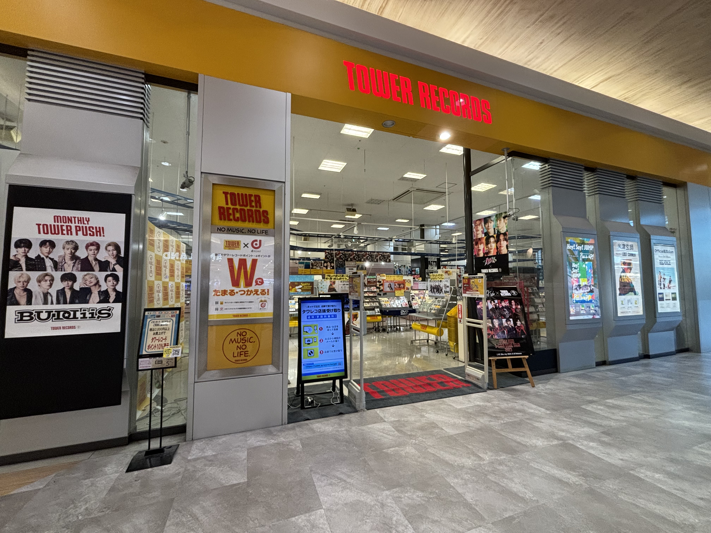
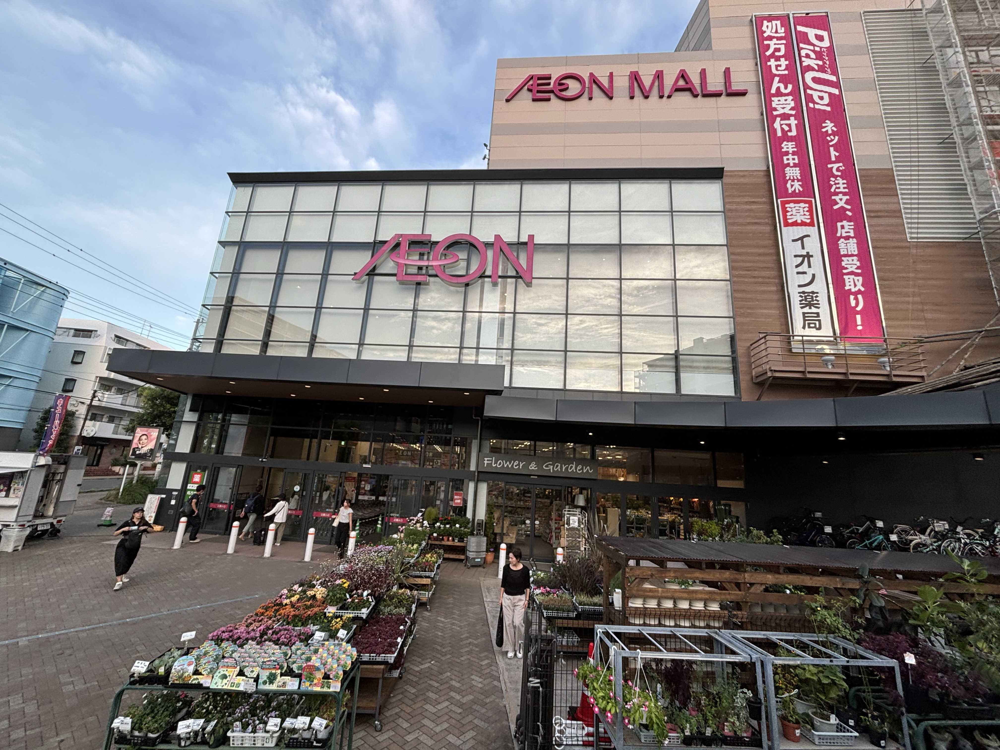
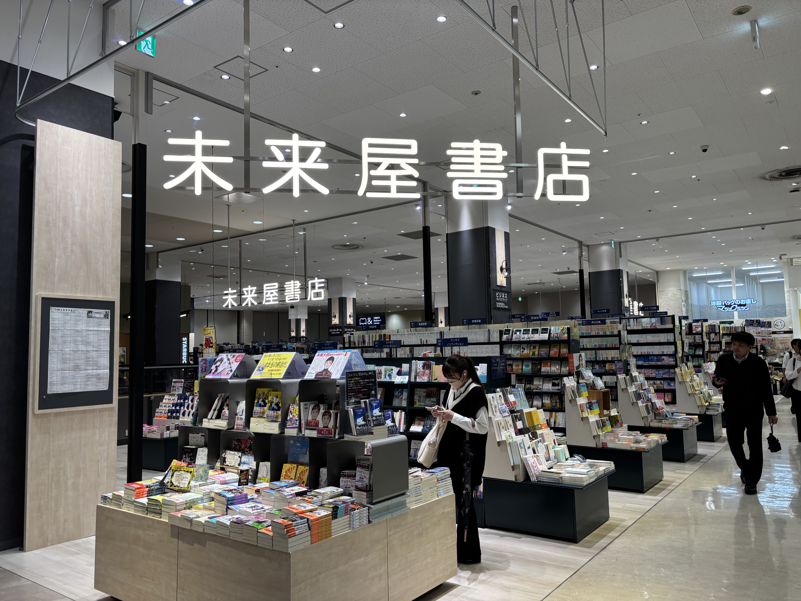
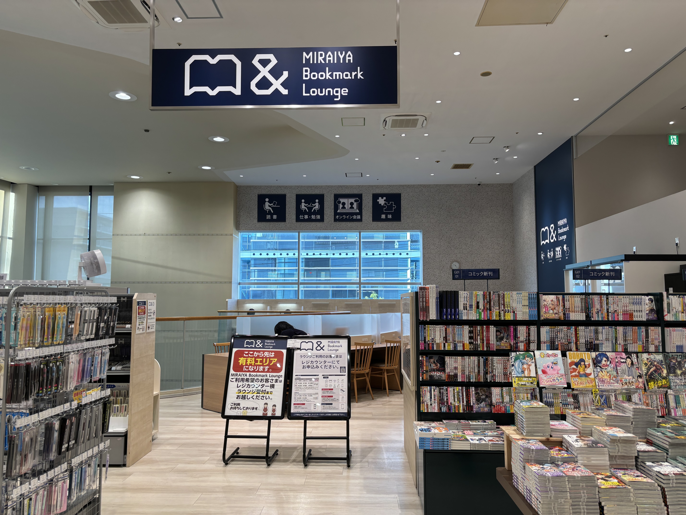
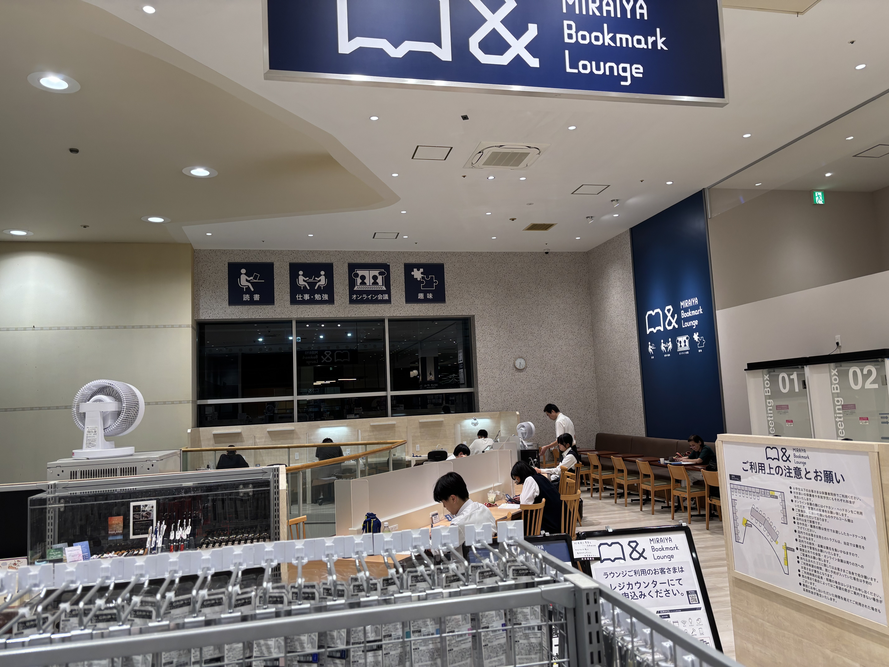
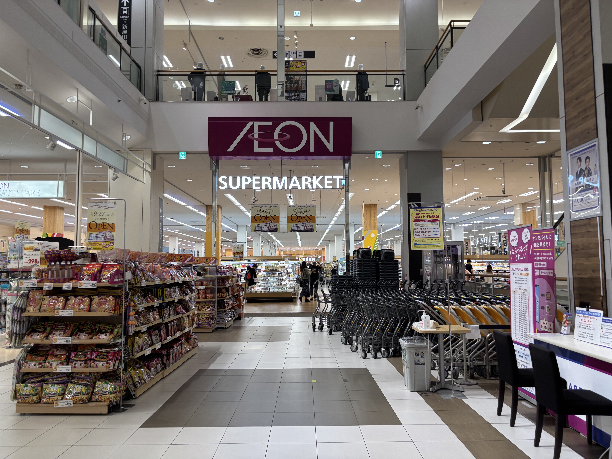
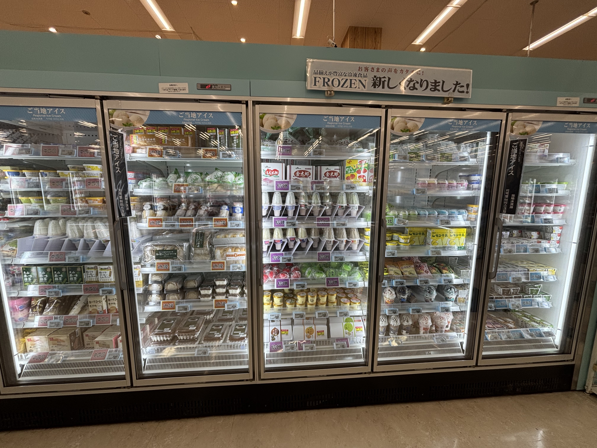
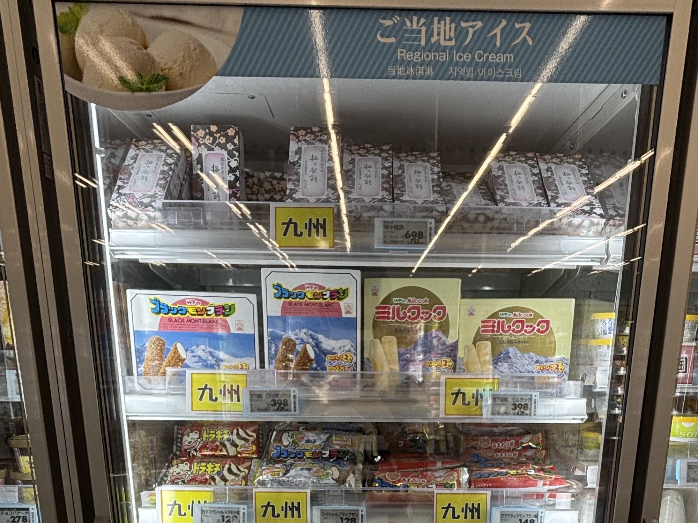
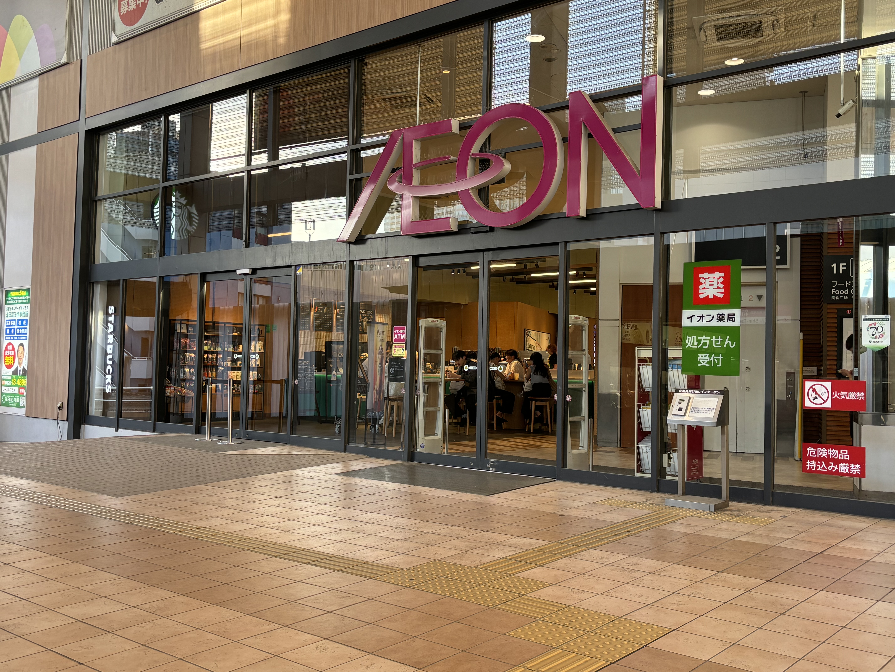

JR津田沼駅・新津田沼駅からアクセス抜群で津田沼を代表するショッピングモールです。
ショッピング・娯楽・飲食全てありほぼここで完結します。
このページでは紹介できないほどの多くのお店がたくさんあるので気になったら一度行ってみて間違いなし!
詳しい行き方は下のページで紹介しているのでご覧ください。
アクセス方法はこちら
営業時間:10:00〜21:00 場所:2F東公園側

1位にランクインしたのはタワーレコード津田沼店です!
店内にはJ-POPやKPOPなど多くのCDやグッズを取り揃えており在庫数は約50,000枚!
千葉県には4ヶ所しかなくアーティストのCDや店舗限定グッズを手に入れることができます。
また、店内にはイベントスペースがあり、そこでは握手会や撮影会などが行われています。
イベントによっては特定のアイドルに特化した中古グッズ販売会が開催されることもあります。
CDをタワレコオンラインから注文し店舗で受け取れば特典グッズや送料節約にもなります。
津田沼であなたの推しに会えるチャンスかも！？
※イベントは不定期開催のため、詳しくはホームページをご確認ください。イベント情報
営業時間:10:00〜21:00 2F新津田沼入口



未来屋書店はショッピングモールなどで見かける書店ですが、ここでは「MIRAIYA Bookmark Lounge」というラウンジが併設されています。
このラウンジは、勉強や趣味に集中したい方のために静かな空間を提供しており、読書も可能です。書店の本を3冊まで持ち込むことができ、じっくり読むことができます。
フリードリンクやコピー機、Wi-Fiも完備されており、快適に過ごせる空間です。
ラウンジの利用料は一般300円、学生割引（学生証提示）で250円となっています。一日中利用しても950円と非常にお得です。
自宅で集中できない方にはおすすめのスポットです。
※料金や利用方法はホームページをご確認ください。MIRAIYA Bookmark Lounge
営業時間:24時間営業 1F新津田沼側



第3位はイオン食料品コーナーのアイスコーナーです!
北海道から九州までのご当地アイスをここ津田沼で手に入れることができます。
24時間営業なので、いつでも立ち寄ることができ、故郷の味を楽しむことができます。
珍しいアイスもあり、アイス好きには見逃せないスポットです。
所要時間:5分1秒

1. 改札を出て左（北口）に向かいます。

2. 右に曲がりまっすぐ進みます。

3. 左側に階段が見えてくるので降りて右に進みます。

4. まっすぐ進むと新津田沼駅前の交差点があるので渡ります。
所要時間:25秒

1. 改札を出て右に進み北方向へ。

2. セブンイレブン前をまっすぐ進みます。

3. 25秒でイオン入口に到着です。